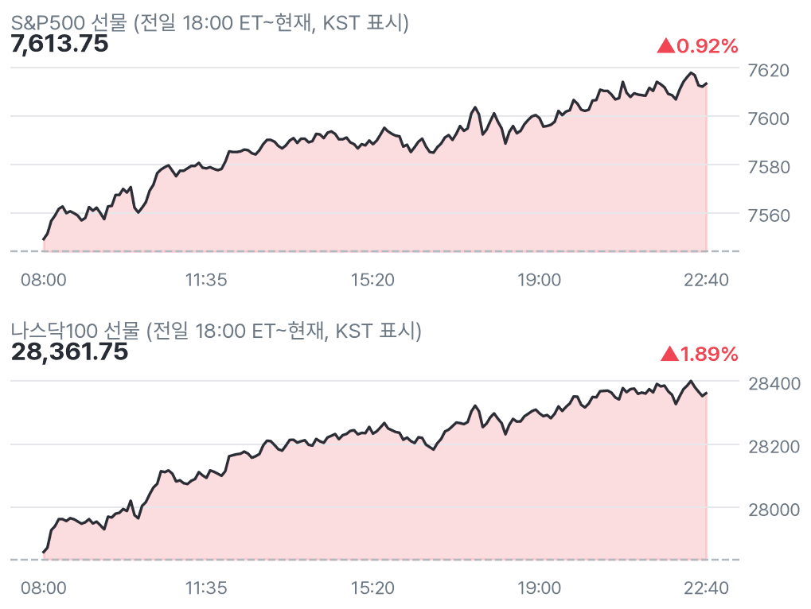
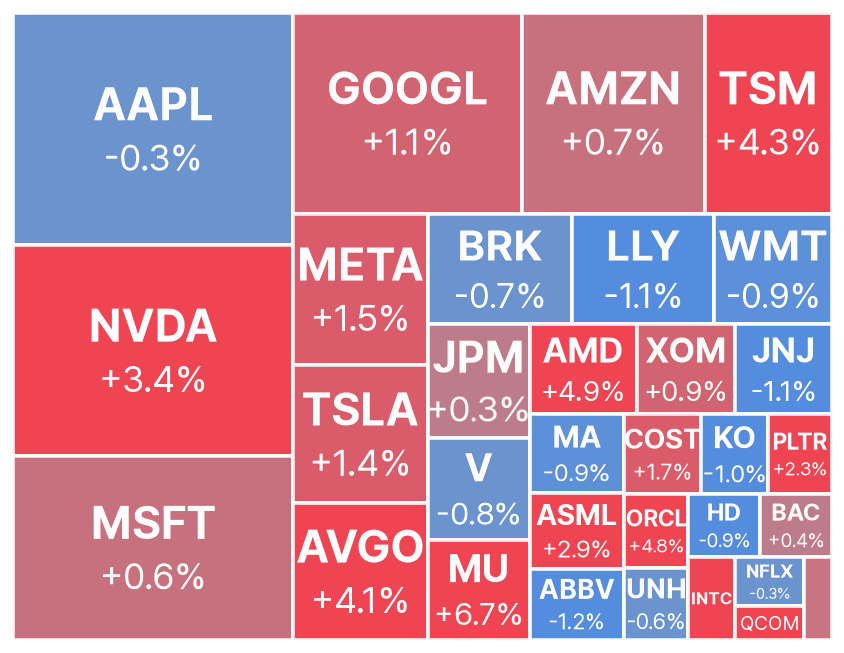
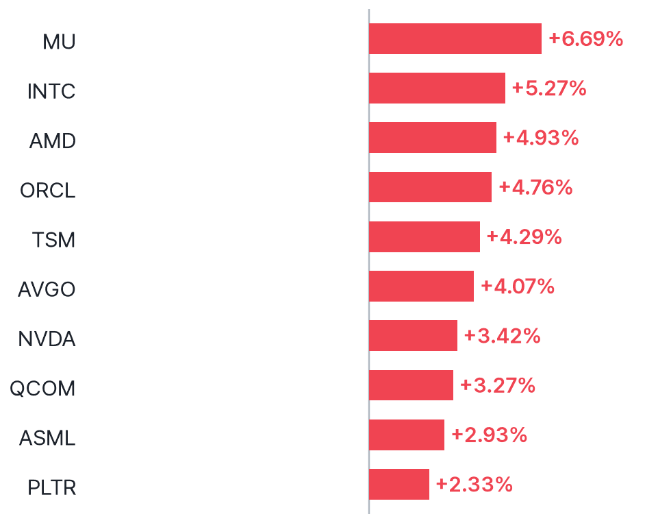
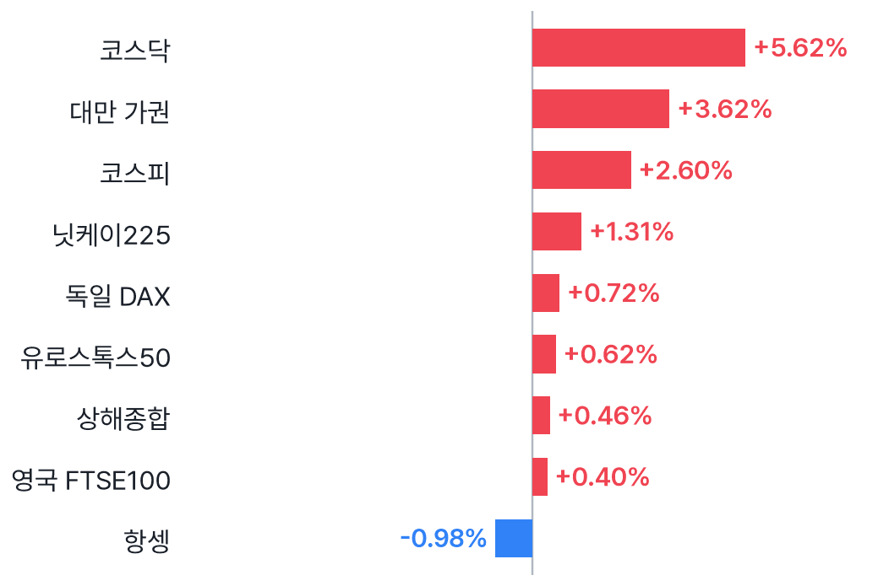
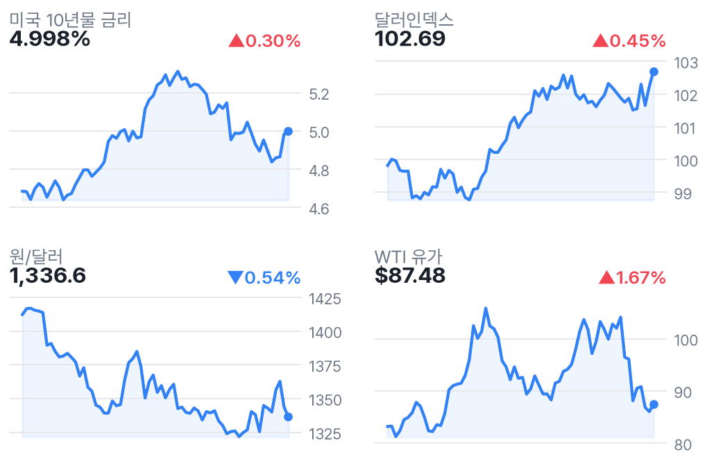

나스닥100 선물 1.89%↑, AI 수요 우려 완화
✅ 핵심 요약
- S&P500 선물 +0.92%·나스닥100 +1.89%, 기술주 반등이 상승 주도
- MU +6.69%·NVDA +3.42%, 코어위브 전망 상향에 AI주 동반 강세
- VIX 18.44로 5.24% 하락, 다만 굴스비의 물가 경계 발언은 부담
- 달러인덱스 102.69·WTI $87.48, 달러·유가 상승도 동반
📊 주요 지표
S&P500 선물
7,613.75
▲0.92%
나스닥100 선물
28,361.75
▲1.89%
다우 선물
52,453
▲0.26%
러셀 선물
2,854.70
▲0.91%
VIX
18.44
▼5.24%
미국 10년물
4.998%
▲0.30%
달러인덱스
102.69
▲0.45%
원/달러
1,336.6
▼0.54%
WTI
$87.48
▲1.67%
금
$4,042
▲0.30%
비트코인
$73,678
▼0.06%
유로스톡스50
6,367.28
▲0.62%
🧭 시장 해석
수집 뉴스에 따르면 코어위브의 전망 상향이 AI 인프라 수요 둔화 우려를 누그러뜨렸다. 나스닥100 선물 +1.89%, MU +6.69% 등 기술주 중심 반등이다. NVDA도 Baird의 의견 하향에도 +3.42%다.
다만 굴스비의 물가 경계 발언과 달러·유가 상승이 공존한다. 한국 반도체에도 우호적인 재료지만 개장 후 상승 유지가 관건이다. 일정에는 미국 은행 휴일만 수집됐으며, 장전 주요 지표 실제치·예상치 비교는 확인되지 않았다.
반등과 추세 전환은 구분
나스닥100 선물은 장전 +1.89%지만 최근 1개월 -7.89%다. MU +6.69%, INTC +5.27%, AMD +4.93%로 반도체가 앞선다. 반면 AAPL -0.32%, JNJ -1.09%로 상승은 고르지 않다. 제공 시세로는 전면적인 위험선호보다 AI 중심 회복에 가깝다.
은행 휴일과 금리 수치의 해석
경제 캘린더에는 미국 Bank Holiday만 표시됐다. 이것만으로 모든 지표 발표가 없다고 단정하지 않는다. 미국 10년물 4.998%는 수집 시세이며, 해당 타일만으로 오늘 실시간 현물 채권 매도를 추론하지 않는다. 장전 주요 지표 실제치는 별도로 확인되지 않아 수치를 싣지 않았다.
📈 차트
미국 지수 선물 야간 흐름

점선 = 전일 정산가
빅테크·대형주 프리마켓 히트맵

전일 종가 대비 프리마켓 현재가 · 타일 크기 = 시가총액
프리마켓 변동 상위 10 (대형주)

변동폭 절대값 기준
유럽(장중) · 아시아(마감) 증시

현지 기준 전일 대비
금리·달러·원화·유가 (3개월)

우측 상단 = 전일 대비
🏦 애널리스트 · 리서치
- NVDA — Baird, Outperform→Neutral·목표가 $500→$200투자의견·목표가를 낮췄다는 의견. 제공 프리마켓 시세는 +3.42%로, 의견 하향에도 업종 반등에 동참했다.
- AAPL — China Renaissance, Hold→Buy·목표가 $425 제시매수로 상향했다는 의견. 수집된 이전 목표가 0은 유효한 비교값으로 보지 않는다. 프리마켓은 -0.32%로 반응이 제한적이다.
미국 대형주 의견·목표가 변경 2건 (Yahoo)
- 의견 상향AAPL · China RenaissanceHold → Buy · 목표가 $425 · 11/11 22:02 KST
- 의견 하향NVDA · BairdOutperform → Neutral · 목표가 $500 → $200 · 11/11 21:00 KST
📰 주요 뉴스
-
AI 인프라 수요 신뢰 회복이 반도체 동반 반등의 배경CNBC
-
종목 불확실성이 해소됐는지와 업종 반등 효과를 구분할 필요CNBC
-
물가 경계와 추가 긴축 우려가 기술주 반등의 제약CNBC
미국·글로벌 헤드라인 18건
-
CNBC · 11/11 22:50
-
CNBC · 11/11 22:46
-
CNBC · 11/11 22:45
-
CNBC · 11/11 22:40
-
CNBC · 11/11 22:37
-
MarketWatch · 11/11 22:37
-
CNBC · 11/11 22:36
-
Bloomberg.com · 11/11 22:32
-
CNBC · 11/11 22:24
-
CNBC · 11/11 22:16
-
MarketWatch · 11/11 22:15
-
MarketWatch · 11/11 22:15
-
WSJ Markets · 11/11 22:14
-
Detroit Free Press · 11/11 22:14
-
MarketWatch · 11/11 22:06
-
Investor's Business Daily · 11/11 22:04
-
WSJ Markets · 11/11 21:49
-
AFP.com · 11/11 21:40
애널리스트 관련 헤드라인 12건
-
Stocktwits · 11/11 22:22
-
Benzinga · 11/11 21:40
-
Quantisnow · 11/11 21:37
-
Quantisnow · 11/11 21:37
-
Quantisnow · 11/11 21:36
-
Quantisnow · 11/11 21:36
-
Quantisnow · 11/11 21:36
-
Quantisnow · 11/11 21:36
-
Quantisnow · 11/11 21:31
-
Quantisnow · 11/11 21:31
-
Quantisnow · 11/11 21:31
-
Quantisnow · 11/11 21:26
국내 헤드라인 8건
-
뉴스핌 · 11/11 22:33
-
IDNFinancials · 11/11 22:00
-
뉴스핌 · 11/11 21:34
-
IDNFinancials · 11/11 21:20
-
PANews · 11/11 21:09
-
자본시장뉴스 · 11/11 21:05
-
CBC뉴스 · 11/11 21:02
-
톱스타뉴스 · 11/11 20:58
🗓️ 일정
경제지표·이벤트 (KST)
- 22:00🇺🇸 미국 Bank Holiday11/11 · 중요도 휴일
오늘 미국 실적 발표 (장전=발표 완료 · 장후=새벽)
- FNV Franco-Nevada Corporation장후시총 $50.9B · EPS 예상 $1.77
- VYLR Vylor Inc.장후시총 $48.4B · EPS 예상 ($0.44)
👀 체크포인트
- 23:30미국장 개장: 나스닥·반도체 장전 상승 유지 및 업종 확산 여부
- 오늘미국 은행 휴일 표시; 장전 주요 지표 실제치·예상치 비교는 확인 안 됨
- 장중굴스비 물가 경계 발언 이후 달러와 AI주 반응 관찰
- 장후FNV·VYLR 실적 예정: 예상 EPS 각각 $1.77·-$0.44